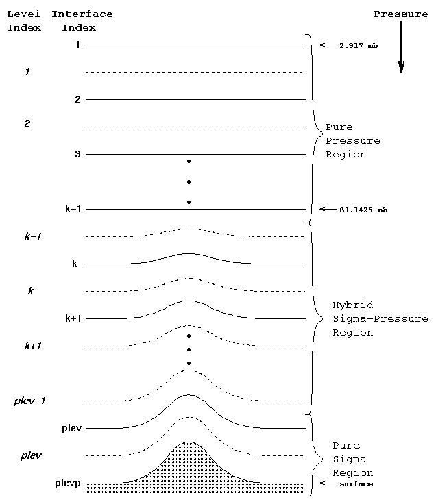

Figure 2.1 Hybrid Vertical Coordinate.

Pressure is defined as:
p(i,j,k) = AkP0 + BkPs(i,j)
where p is the pressure at a given level and latitude, longitude grid point. The coefficients A, B and P0 are constants. Ps is the model's current surface pressure. P0 is set in the model code. The input model initial conditions dataset sets A and B through the variables hyam, hyai, hybm, and hybi. The subscript "i" refers to interface levels, and "m" refers to the mid-point levels. "hyam" then refers to Hybrid level "A" coefficient on the interfaces.
More details on the theoretical nature of the vertical coordinate system
can be found in Hack et al. (1993).

Questions on these pages can be sent to... erik@ucar.edu .
 Search page
Search page